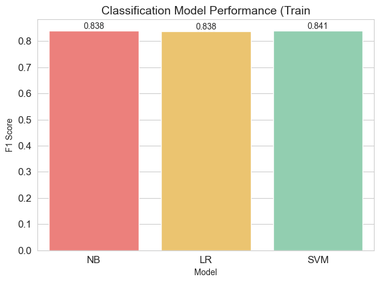

Modelling - Training
Contents
Modelling - Training#
3 classification models are applied to the training data:
Multinomial Naive Bayes
Logistic Regression
Support Vecotr Machine (linear kernel)
A pipeline is created for each to cross validate several options and hyper parameters. These include:
Vectorisation method (CountVectorizer, TfidfTransformer)
N-gram range (unigrams and bigrams)
Model specific hyperparameters
5-fold cross-validation is performed for each and F1 accuracy scores obtained. Best parameters and best mean score for each are retained
Load Data#
import pandas as pd
import numpy as np
# load data ----
train_df = pd.read_csv('data/train_data_lemma.csv')
train_df = train_df[train_df['review_text'].str.split().str.len()>=1]
# assign x and y
X_train = train_df.drop(columns = ['classification'])
y_train = train_df[['classification']]
# flatten y
y_train = y_train.values.ravel()
# encode variables (minority class = 1)
y_train = np.where(y_train=='Negative', 1, 0)
Logistic Regression#
from sklearn.feature_extraction.text import CountVectorizer
from sklearn.feature_extraction.text import TfidfTransformer
from sklearn.linear_model import LogisticRegression
from sklearn.model_selection import GridSearchCV
from sklearn.pipeline import Pipeline
pipeline = Pipeline(
[
("vect", CountVectorizer()),
("tfidf", TfidfTransformer()),
("lr", LogisticRegression(random_state = 1, max_iter=500)),
]
)
parameters = {
"vect__ngram_range": ((1, 1), (1, 2)),
'tfidf__use_idf': (True, False),
'tfidf__norm': ('l1', 'l2'),
"lr__C": (0.001, 0.01, 0.1, 1, 10),
}
lr_grid = GridSearchCV(pipeline, parameters, n_jobs=-1, verbose=0, scoring='f1')
lr_grid.fit(X_train.review_text, y_train)
print("Best score: %0.3f" % lr_grid.best_score_)
print("Best parameters:")
lr_grid.best_params_
Best score: 0.839
Best parameters:
{'lr__C': 10,
'tfidf__norm': 'l2',
'tfidf__use_idf': False,
'vect__ngram_range': (1, 2)}
Naive Bayes#
from sklearn.naive_bayes import MultinomialNB
pipeline = Pipeline(
[
("vect", CountVectorizer()),
("tfidf", TfidfTransformer()),
("nb", MultinomialNB())
]
)
parameters = {
"vect__ngram_range": ((1, 1), (1, 2)),
'tfidf__use_idf': (True, False),
'tfidf__norm': ('l1', 'l2'),
"nb__alpha": (0.001, 0.01, 0.1, 1, 10)
}
nb_grid = GridSearchCV(pipeline, parameters, n_jobs=-1, verbose=0, scoring='f1')
nb_grid.fit(X_train.review_text, y_train)
print("Best score: %0.3f" % nb_grid.best_score_)
print("Best parameters:")
nb_grid.best_params_
Best score: 0.837
Best parameters:
{'nb__alpha': 0.1,
'tfidf__norm': 'l2',
'tfidf__use_idf': False,
'vect__ngram_range': (1, 2)}
Support Vector Machine (linear kernel)#
from sklearn.svm import SVC
pipeline = Pipeline(
[
("vect", CountVectorizer()),
("tfidf", TfidfTransformer()),
("svm", SVC(random_state = 1, kernel = 'linear'))
]
)
parameters = {
"vect__ngram_range": ((1, 1), (1, 2)),
'tfidf__use_idf': (True, False),
'tfidf__norm': ('l1', 'l2'),
"svm__C": (0.001, 0.01, 0.1, 1, 10)
}
svm_grid = GridSearchCV(pipeline, parameters, n_jobs=-1, verbose=1, scoring='f1')
svm_grid.fit(X_train.review_text, y_train)
print("Best score: %0.3f" % svm_grid.best_score_)
print("Best parameters:")
svm_grid.best_params_
Fitting 5 folds for each of 40 candidates, totalling 200 fits
Best score: 0.841
Best parameters:
{'svm__C': 1,
'tfidf__norm': 'l2',
'tfidf__use_idf': True,
'vect__ngram_range': (1, 2)}
Accuracy scores are very similar for the best performing parameters of each model.
Results are so close that each model will be evaluated against the test data
import matplotlib.pyplot as plt
import seaborn as sns
# plot model performance
sns.set_style('whitegrid')
ax = sns.barplot(
data=pd.DataFrame([['NB', nb_grid.best_score_], ['LR', lr_grid.best_score_], ['SVM', svm_grid.best_score_]],columns=['Model','F1 Score']),
x="Model",
y='F1 Score',
palette=["#FF6F69","#ffcc5c","#88D8B0"])
ax.bar_label(ax.containers[0],fmt='%.3f')
plt.title('Classification Model Performance',fontsize=14)
plt.tick_params(labelsize=12)
plt.tight_layout()
plt.show();

# store trained models
import pickle
pickle.dump(nb_grid.best_estimator_, open("data/nb_trained.sav", 'wb'))
pickle.dump(lr_grid.best_estimator_, open("data/lr_trained.sav", 'wb'))
pickle.dump(svm_grid.best_estimator_, open("data/svm_trained.sav", 'wb'))